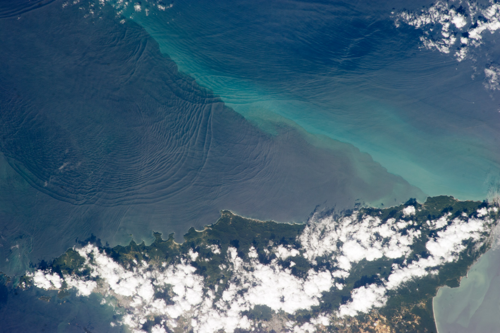

INTERNAL WAVES
CHALLENGE
Representing in a video format an invisible phenomenon. Internal waves, vital in oceanography, are nearly invisible but play a crucial role in climate and ecosystems, posing a challenge for public awareness.
Internal waves are inherently challenging to represent visually. Unlike surface waves that are easily observable, these waves are hidden beneath the ocean's surface
The scientific principles governing internal waves involve complex fluid dynamics and stratification, making them difficult to simplify for a broader audience
Describing the abstract concept of internal waves and their importance required a creative approach to visualisation
To overcome these challenges, the video "Understanding Internal Waves" adopted a creative and innovative approach. Drawing inspiration from silent movies and vintage aesthetics, the video transformed the abstract concept of internal waves into a visually engaging narrative. Through abstract and illustrative storytelling, the video successfully conveyed the essence of internal waves, making them accessible and intriguing to a broad audience.

By acknowledging the complexities of internal waves and addressing the challenge of making them understandable, the video demonstrated that effective science communication can bridge the gap between intricate scientific phenomena and public awareness. It showcased how creativity and thoughtful storytelling can bring seemingly invisible phenomena to life, helping people appreciate their importance in the broader context of oceanography and climate science.